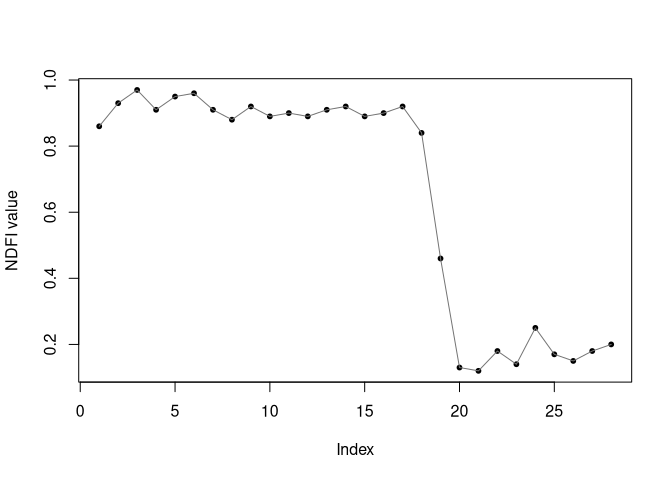
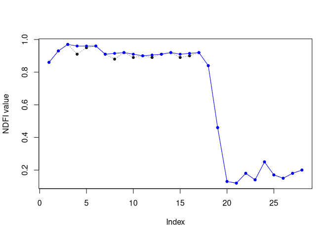
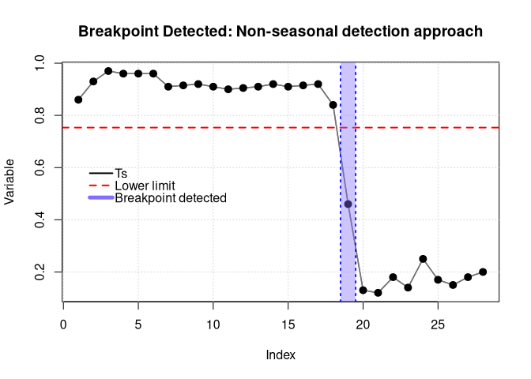
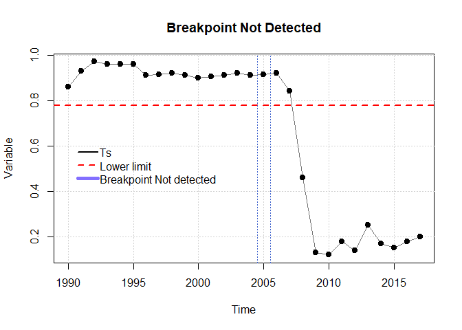
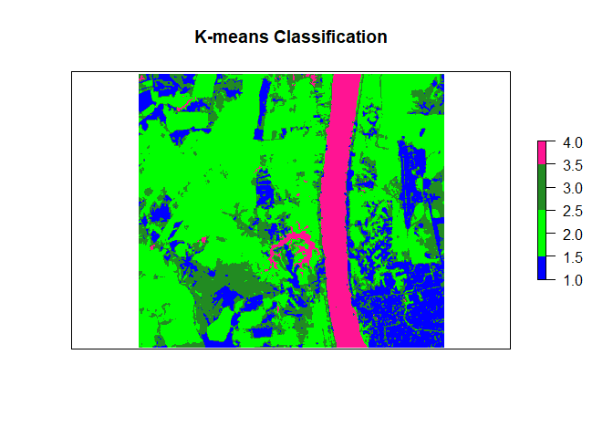
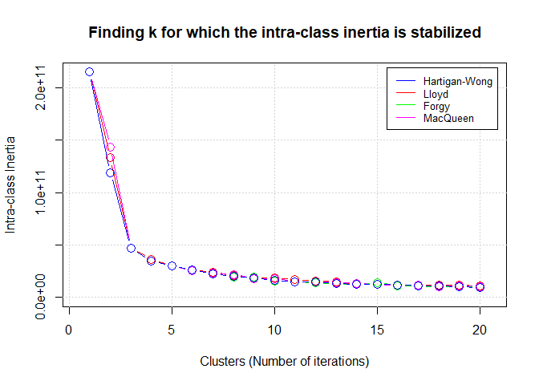

Introduction
ForesToolboxRS is an R package providing a variety of tools and algorithms for the processing and analysis of satellite images for the various applications of Remote Sensing for Earth Observations. All implemented algorithms are based on scientific publications.
The PVts-Beta approach, a non-seasonal detection approach, is implemented in this package and can read time series, vector, matrix, and raster data. Some functions of this package are intended to show, on the one hand, some progress in methods for mapping deforestation and forest degradation, and on the other hand, to provide some tools (not yet available) for routine analysis of remotely detected data. Tools for calibration of unsupervised and supervised algorithms through various calibration approaches are some of the functions embedded in this package.
Available functions:
| Name of functions | Description |
|---|---|
pvts() |
This algorithm will allow to detect disturbances in the forests using all the available Landsat set. In fact, it can also be run with sensors such as MODIS. |
pvtsRaster() |
This algorithm will allow to detect disturbances in the forests using all the available Landsat set. In fact, it can also be run with sensors such as MODIS. |
smootH() |
In order to eliminate outliers in the time series, a temporary smoothing is used. |
mla() |
This developed function allows to execute supervised classification in satellite images through various algorithms. |
calmla() |
This function allows to calibrate supervised classification in satellite images through various algorithms and using approches such as Set-Approach, Leave-One-Out Cross-Validation (LOOCV), Cross-Validation (k-fold) and Monte Carlo Cross-Validation (MCCV). |
rkmeans() |
This function allows to classify satellite images using k-means. |
calkmeans() |
This function allows to calibrate the kmeans algorithm. It is possible to obtain the best k value and the best embedded algorithm in kmeans. |
coverChange() |
This algorithm is able to obtain gain and loss in land cover classification. |
linearTrend() |
Linear trend is useful for mapping forest degradation, land degradation, among others. This algorithm is capable of obtaining the slope of an ordinary least-squares linear regression and its reliability (p-value). |
fusionRS() |
This algorithm allows to fusion images coming from different spectral sensors (e.g., optical-optical, optical and SAR or SAR-SAR). Among many of the qualities of this function, it is possible to obtain the contribution (%) of each variable in the fused image. |
sma() |
The SMA assumes that the energy received, within the field of vision of the remote sensor, can be considered as the sum of the energies received from each dominant endmember. This function addresses a Linear Mixing Model. |
ndfiSMA() |
The NDFI it is sensitive to the state of the canopy cover, and has been successfully applied to monitor forest degradation and deforestation in Peru and Brazil. This index comes from the endmembers Green Vegetation (GV), non-photosynthetic vegetation (NPV), Soil (S) and the reminder is the shade component. |
tct() |
The Tasseled-Cap Transformation is a linear transformation method for various remote sensing data. Not only can it perform volume data compression, but it can also provide parametersassociated with the physical characteristics, such as brightness, greenness and wetness indices. |
gevi() |
Greenness Vegetation Index is obtained from the Tasseled Cap Transformation. |
MosaicFreeCloud() |
A three-step algorithm for creating a mosaic from satellite imagery (see notes). |
Installation
To install the latest development version directly from the GitHub repository. Before running ForesToolboxRS, it is necessary to install the remotes package:
library(remotes)
install_github("ytarazona/ForesToolboxRS")
suppressMessages(library(ForesToolboxRS))Examples
1. Breakpoint in an NDFI series (pvts function)
Here an Normalized Difference Fraction Index (NDFI) between 2000 and 2019 (28 data), one NDFI for each year, and we will detect a change in 2008 (position 19). The NDFI value ranges from -1 to 1.
suppressMessages(library(ForesToolboxRS))
# NDFI series
ndfi <- c(0.86, 0.93, 0.97, 0.91, 0.95, 0.96, 0.91,
0.88, 0.92, 0.89, 0.90, 0.89, 0.91, 0.92,
0.89, 0.90, 0.92, 0.84, 0.46, 0.13, 0.12,
0.18, 0.14, 0.25, 0.17, 0.15, 0.18, 0.20)
# Plot
plot(ndfi, pch = 20, xlab = "Index", ylab = "NDFI value")
lines(ndfi, col = "gray45")
1.1 Applying a smoothing (the smootH() function)
Before detecting a breakpoint, it is necessary to apply smoothing to remove any existing outliers. So, we’ll use the smootH() function from the ForesToolboxRS package. The mathematical approach of this method of removing outliers implies the non-modification of the first and last values of the historical series.
If the idea is to detect changes in 2008 (position 19), then we will smooth the data only up to that position (i.e., ndfi[1:19]). Let’s do that.
ndfi_smooth <- ndfi
ndfi_smooth[1:19] <- smootH(ndfi[1:19])
# Let's plot the real series
plot(ndfi, pch = 20, xlab = "Index", ylab = "NDFI value")
lines(ndfi, col = "gray45", lty = 3)
# Let's plot the smoothed series
lines(ndfi_smooth, col = "blue", ylab = "NDFI value", xlab = "Time")
points(ndfi_smooth, pch = 20, col = "blue")
Note: You can change the detection threshold if you need to.
1.1 Breakpoint using a specific index (vector)
To detect changes, either we can have a vector (using a specific index/position) or a time series as input. Let’s first detect changes with a vector, a then with a time series.
We use the output of the smootH() function (ndfi_smooth()).
Parameters:
- x: smoothed series preferably to optimize detection
- startm: monitoring year, index 19 (i.e., year 2008)
- endm: year of final monitoring, index 19 (i.e., also year 2008)
- threshold: detection threshold (for NDFI series we will use 5). If you are using PV series, NDVI or EVI series you can use 5, 3 or 3 respectively. Please see Tarazona et al. (2018) for more details.
# Detect changes in 2008 (position 19)
cd <- pvts(x = ndfi_smooth, startm = 19, endm = 19, threshold = 5)
plot(cd)
1.3 Breakpoint using Time Series
Parameters:
- x: smoothed series preferably to optimize detection
- startm: monitoring year, in this case year 2008.
- endm: year of final monitoring, also year 2008.
- threshold: detection threshold (for NDFI series we will use 5). If you are using PV series, NDVI or EVI series you can use 5, 3 or 3 respectively. Please see Tarazona et al. (2018) for more details.
# Let´s create a time series of the variable "ndfi"
ndfi_ts <- ts(ndfi, start = 1990, end = 2017, frequency = 1)
# Applying a smoothing
ndfi_smooth <- ndfi_ts
ndfi_smooth[1:19] <- smootH(ndfi_ts[1:19])
# Detect changes in 2008
cd <- pvts(x = ndfi_ts, startm = 2008, endm = 2008, threshold = 5)
plot(cd)1.4 Breakpoint Not Detected
Parameters:
- x: smoothed series preferably to optimize detection
- startm: monitoring year, index 16 (i.e., year 2005)
- endm: year of final monitoring, index 16 (i.e., also year 2005)
- threshold: detection threshold (for NDFI series we will use 5). If you are using PV series, NDVI or EVI series you can use 5, 3 or 3 respectively. Please see Tarazona et al. (2018) for more details.
# Detect changes in 2005
cd <- pvts(x = ndfi_smooth, startm = 2005, endm = 2005, threshold = 5)
plot(cd)
2. Supervised classification in Remote Sensing (the mla() function)
For this tutorial, Landsat-8 OLI image and signatures were used. Download the data Here.
2.1 Applying Random Forest (supervised classification)
Parameters:
- img: RasterStack (Landsat 8 OLI)
- endm: Signatures, SpatialPointsDataFrame (shapefile)
- model: Random Forest like ‘svm’
- training_split: 80 percent to train and 20 percent to validate the model
suppressMessages(library(ForesToolboxRS))
suppressMessages(library(raster))
suppressMessages(library(snow))
suppressMessages(library(caret))
suppressMessages(library(rgdal))
# Read raster
image_path <- "LC08_232066_20190727_SR.tif"
image <- stack(image_path)
# Read signatures
sig <- sf::read_sf("signatures", "signatures")
# Classification with Random Forest
classRF <- mla(img = image, model = "randomForest", endm = sig, training_split = 80)
#> 4 cores detected, using 3
# Results
print(classRF)
#> ******************** ForesToolboxRS CLASSIFICATION ********************
#>
#> ****Overall Accuracy****
#> Accuracy Kappa AccuracyLower AccuracyUpper AccuracyNull
#> 9.431818e+01 9.238227e+01 8.723676e+01 9.812961e+01 2.954545e+01
#> AccuracyPValue
#> 7.838047e-36
#>
#> ****Confusion Matrix****
#> 1 2 3 4 Total Users_Accuracy Commission
#> 1 20 0 0.00000 0.00000 20 100.00000 0.00000
#> 2 0 24 0.00000 0.00000 24 100.00000 0.00000
#> 3 0 0 16.00000 3.00000 19 84.21053 15.78947
#> 4 0 0 2.00000 23.00000 25 92.00000 8.00000
#> Total 20 24 18.00000 26.00000 NA NA NA
#> Producer_Accuracy 100 100 88.88889 88.46154 NA NA NA
#> Omission 0 0 11.11111 11.53846 NA NA NA
#>
#> ****Classification Map****
#> class : RasterLayer
#> dimensions : 1163, 1434, 1667742 (nrow, ncol, ncell)
#> resolution : 0.0002694946, 0.0002694946 (x, y)
#> extent : -64.15723, -63.77077, -8.827834, -8.514412 (xmin, xmax, ymin, ymax)
#> crs : +proj=longlat +datum=WGS84 +no_defs
#> source : memory
#> names : layer
#> values : 1, 4 (min, max)
# Plotting classification
par(mfrow = c(1,2), mar = c(3, 4, 3, 3))
# Landsat-8 image
plotRGB(image, 6, 5, 2, stretch = "lin")
# Classification
colmap <- c("#0000FF","#228B22","#FF1493", "#00FF00")
plot(classRF$Classification, main = "RandomForest Classification", col = colmap, axes = FALSE)
2.2 Calibrating with Monte Carlo Cross-Validation (calmla() function)
ForesToolboxRS has several approaches to calibrate machine learning algorithms such as Set-Approach, Leave One Out Cross-Validation (LOOCV), Cross-Validation (k-fold) and Monte Carlo Cross-Validation (MCCV).
Parameters:
- img: RasterStack (Landsat-8 OLI)
- endm: Signatures
- model: c(“svm”, “randomForest”, “naiveBayes”, “knn”). Machine learning algorithms: Support Vector Machine, Random Forest, Naive Bayes, K-nearest Neighbors
- training_split: 80
- approach: “MCCV”
- iter: 10
cal_ml <- calmla(img = image, endm = sig,
model = c("svm", "randomForest", "naiveBayes", "knn"),
training_split = 80, approach = "MCCV", iter = 10)
# Calibration result
plot(
cal_ml$svm_mccv,
main = "Monte Carlo Cross-Validation calibration",
col = "darkmagenta",
type = "b",
ylim = c(0, 0.4),
ylab = "Error between 0 and 1",
xlab = "Number of iterations"
)
lines(cal_ml$randomForest_mccv, col = "red", type = "b")
lines(cal_ml$naiveBayes_mccv, col = "green", type = "b")
lines(cal_ml$knn_mccv, col = "blue", type = "b")
legend(
"topleft",
c(
"Support Vector Machine",
"Random Forest",
"Naive Bayes",
"K-nearest Neighbors"
),
col = c("darkmagenta", "red", "green", "blue"),
lty = 1,
cex = 0.7
)
3. Unsupervised classification in Remote Sensing (rkmeans function)
For this tutorial, Landsat-8 OLI image and signatures were used. Download the data Here.
3.1 Applying K-means
Parameters:
- img: RasterStack (Landsat 8 OLI)
- k: the number of clusters
- algo: “MacQueen”
suppressMessages(library(ForesToolboxRS))
suppressMessages(library(raster))
# Read raster
image_path <- "LC08_232066_20190727_SR.tif"
image <- stack(image_path)
# Classification with K-means
classKmeans <- rkmeans(img = image, k = 4, algo = "MacQueen")
# Plotting classification
par(mfrow = c(1, 2), mar = c(3, 4, 3, 3))
# Landsat-8 image
plotRGB(image, 6, 5, 2, stretch = "lin")
# Classification
colmap <- c("#0000FF","#00FF00","#228B22", "#FF1493")
plot(classKmeans, main = "K-means Classification", col = colmap, axes = FALSE)
3.2 Calibrating k-means (the calkmeans() function)
This function allows to calibrate the kmeans algorithm. It is possible to obtain the best value and the best embedded algorithm in kmeans. If we want to find the optimal value of (clusters or classes), so we must put as an argument of the function. Here, we are finding k for which the intra-class inertia is stabilized.
Parameters:
- img: RasterStack (Landsat 8 OLI)
- k: The number of clusters
- iter.max: The maximum number of iterations allowed. Strictly related to k-means
- algo: It can be “Hartigan-Wong”, “Lloyd”, “Forgy” or “MacQueen”. Algorithms embedded in k-means
- iter: Iterations number to obtain the best k value
# Elbow method
best_k <- calkmeans(img = image, k = NULL, iter.max = 10,
algo = c("Hartigan-Wong", "Lloyd", "Forgy", "MacQueen"),
iter = 20)
plot(best_k)